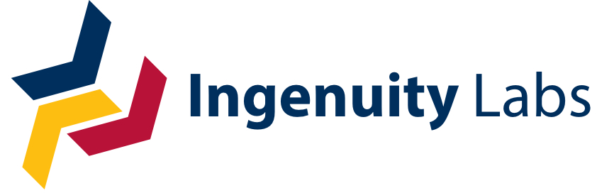

My Professional Journey
Robotics Researcher

Focussed on localization for autonomous vehicles using automotive radar as the main sensing modality. Completed and defended my Master's thesis in only one year (half the expected time), with no prior experience in robotics, sensors, or perception algorithms. In this short time frame, I completed a first-author publication at the top ranked robotics conference globally (ICRA 2023, London UK).
Tech Stack 🛠️
GitHub Repository
Video Presentations
ICRA 2023 Presentation
Short video presentation at IEEE International Conference on Robotics and Automation 2023
AI in Autonomous Vehicles
Podcast discussion on artificial intelligence applications in autonomous vehicles
Publications
Preprint, ICRA 2023
Towards unsupervised filtering of millimetre-wave radar returns for autonomous vehicle road following
IEEE Publication, ICRA 2023
Towards unsupervised filtering of millimetre-wave radar returns for autonomous vehicle road following
Master's Thesis
Autonomous Vehicle Localization Using Automotive Radar and Reflective Lane Markers
Research Poster, ICRA 2023
AI Engineer

Client-facing AI Engineer at IBM with experience building generative AI solutions (RAG, LLM, Agents) for large enterprise clients across various sectors (financial services, government, healthcare, construction, legal, defense).
My interests span scientific and systems-level advancements in AI. Currently, I am most interested in the following topics: information retrieval, LLM agents, optimizing and evaluating RAG, and embedding models/improving semantic search.
Tech Stack 🛠️
Projects
IBM RAG Cookbook
A compendium of tips, tricks, and techniques for implementing and optimizing Retrieval Augmented Generation (RAG) solutions for large enterprise clients
RAG Cookbook Video
Video presentation on the IBM RAG Cookbook
Medium Blog
Technical articles and insights on RAG, LLMs, Agents,and more
Building RAG LLM Agents
IBM Developer tutorial on building Agentic RAG with watsonx, LangGraph, Elasticsearch, and Tavily.